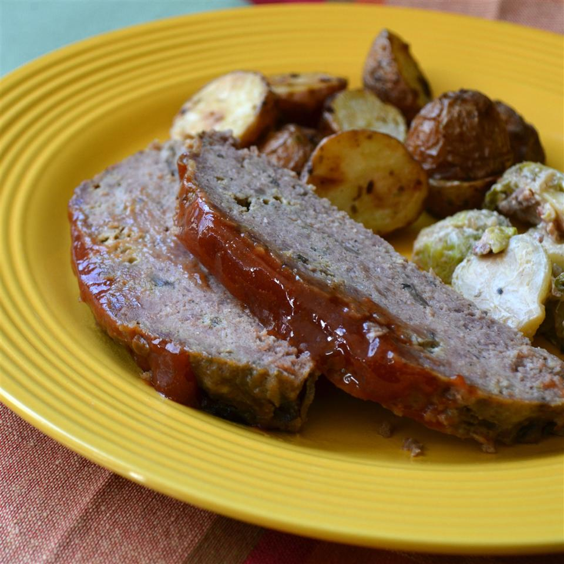

Meatloaf

Description
This meatloaf is absolutely fire, trust. Legit just throw anything into this recipe and it will still come out fire.
Credit to allrecipes the GOATs.
Ingredients
- 2 eggs
- 3/4 cup milk
- 2/3 cup seasoned bread crumbs
- 2 teaspoons dried minced onion
- 1 teaspoon salt
- 1/2 teaspoon rubbed sage
- 1/2 cup sliced fresh mushrooms
- 1 1/2 pounds ground beef
- 1/4 cup ketchup
- 2 tablespoons brown sugar
- 1 teaspoon ground mustard
- 1/2 teaspoon Worcestershire sauce
- optional: 1 teaspoon garlic
Steps
- Combine eggs, milk, bread crumbs, onion, salt, sage, and mushrooms in a large bowl. Add optional garlic. Crumble ground beef over mixture and stir well to combine. Shape into a round loaf; place in a 5-quart slow cooker. Cover and cook on Low until a meat thermometer reads 160 degrees F (71 degrees C), 5 to 6 hours.
- Whisk ketchup, brown sugar, mustard, and Worcestershire sauce in a small bowl; spoon sauce over meat loaf. Return to slow cooker and cook on Low until heated through, about 15 minutes. Let stand 10 minutes before cutting.